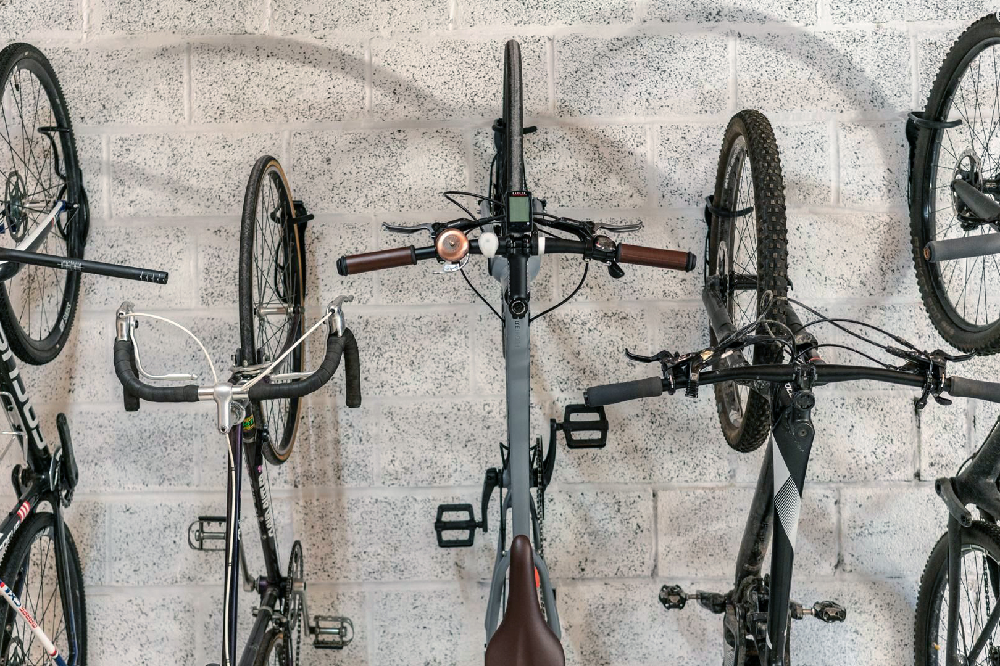
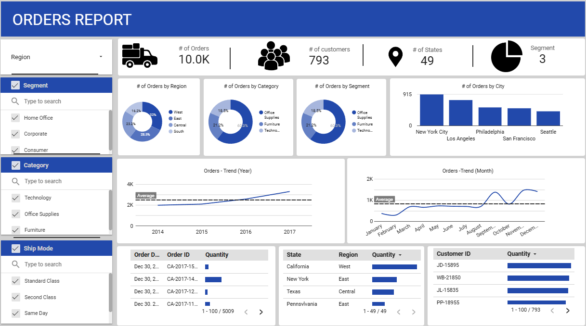
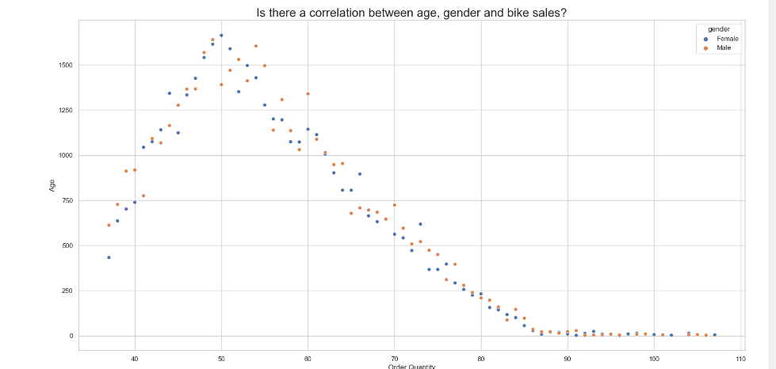
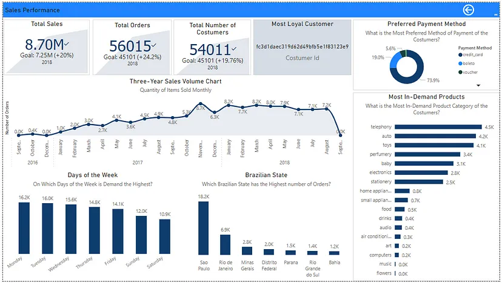
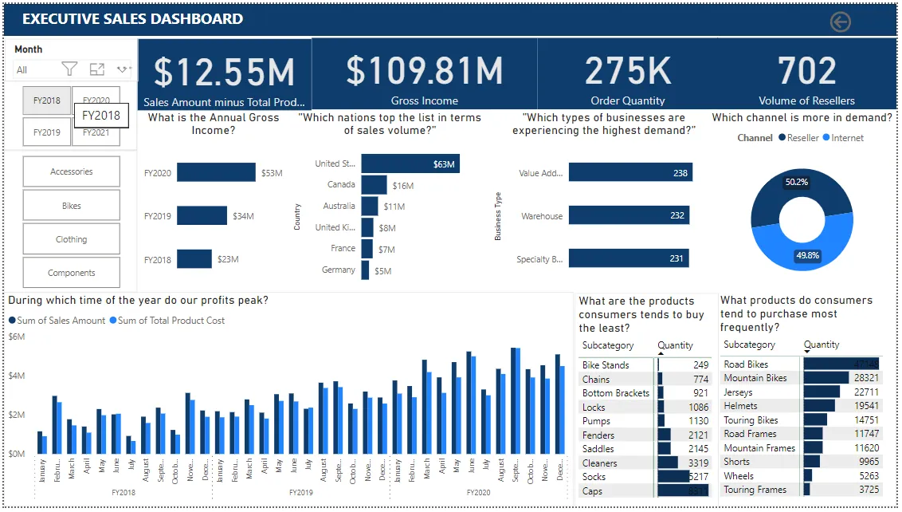
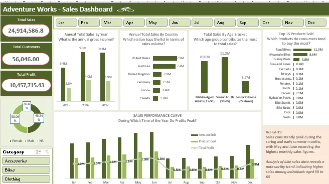
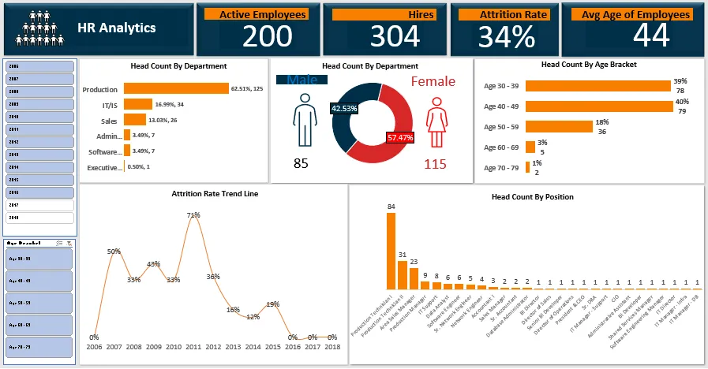

In this project we provided insights into the various aspects of the company's sales operations,
including customer behavior, product performance, and sales trends over time.
This project allows stakeholders to make informed decisions and strategies to drive business growth and profitability.
The dataset consists of tables representing sales transactions, customer information, product details and location.
The Key Components of This Project Includes:
Database Creation
Table Creation
Data Cleaning
SQL Queries

This project focuses on the Preparation, Storing, Cleaning and Transforamtion of housing data all in the MySql platform.
The Key components includes:
-Database Creation
-Cleaning and Transformation of data using SQL queries
-Drawing insights through SQL Queries

Cleaned, transformed, and analyzed data using Google Sheets, and presented the insights through an interactive dashboard created with Looker Studio.

This project utilizes Python Pandas as a Data Cleaning Tool to prepare, clean and Transform a housing data.

In this project we provided insights into the various aspects of the company's sales operations using Python.
Visualization was also provided with Matplotlib and Seaborn.

Unveiling insights from a Brazilian E-Commerce dataset using Power BI, DAX, and Power Query. This project dives deep into sales trends, combining Data Analysis and PowerBi Visualization for a clear snapshot of the e-commerce landscape.
The Key component includes:
-Data Cleaning
-Data Transformation
-Data Modeling(Power Pivot)
-Calculated Field
-DAX

In this project we created an Excecutive Sales Dashboard Utilizing PowerBI Desktop visualitzation tools to extract insights from raw data
The Key component includes:
-Data Cleaning
-Data Transformation
-Data Modeling(Power Pivot)
-Calculated Field
-DAX

In this, we executed a robust data analysis project in Excel, featuring data cleaning, preparation, and transformation using Power Query and DAX. Implemented calculated columns and KPIs for enhanced insights. Concluded with compelling visualizations showcasing the project's analytical depth.
The Key component includes:
-Power Query
-Data Cleaning
-Data Transformation
-Data Modeling(Power Pivot)
-Pivot Tables
-Calculated Field
-DAX

In this project, we explore HR dynamics with an HR dataset Using Microsoft Excel.' Uncover insights, trends, and key metrics for informed decision-making in the HR domain.
The Key component includes:
-Advance Excel Functions (vlookup, data validation, index match
-Data Cleaning
-Data Transformation
-Pivot Tables
-Excel Visualization Tools